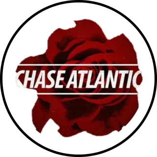

 Chase Atlantic
Chase Atlantic is an Australian R&B band and production trio from Cairns, Queensland, formed in 2014. The group consists of three members: Christian Anthony, Clinton Cave and Mitchel Cave. Chase Atlantic has released seven EPs and three albums.
Read more